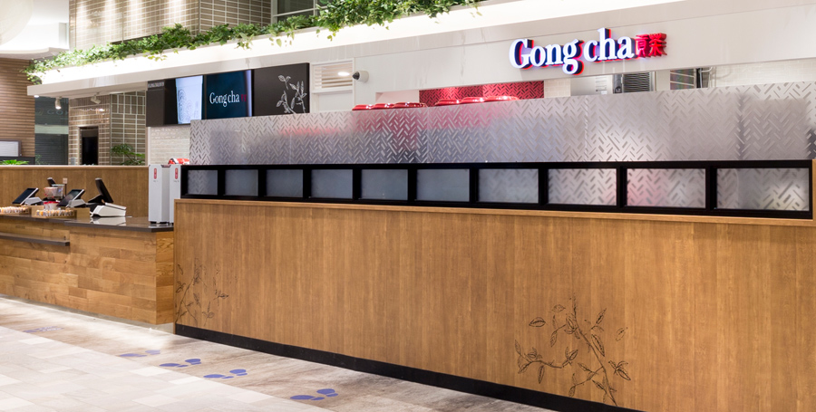

福岡パルコ店
2018.10.26 OPEN
住所:〒810-0001 福岡県福岡市中央区天神2-11-1 福岡パルコ 新館B2F
地図リンクでみる
TEL:092-753-8789
アクセス 市営地下鉄空港線天神駅より直結、西鉄天神大牟田線福岡（天神）駅すぐ
客 席 あり
営業時間 10:00～L.O21:30（閉店22:00）
福岡大名店
2019.03.29 OPEN
住所:〒810-0041 福岡県福岡市中央区大名1-14-25 大名ビューティーコンプレックス1F
地図リンクでみる
TEL 092-753-8556
アクセス 西鉄天神大牟田線福岡（天神）駅より徒歩約7分、市営地下鉄空港線天神駅より徒歩約10分、赤坂駅より徒歩約８分
客 席 あり
営業時間 平日 11:00～21:30
日・祝日 10:00～21:30

博多マルイ店
2019.07.12 OPEN
住所:〒812-0012 福岡県福岡市博多区博多駅中央街9-1 博多マルイ１F
地図リンクでみる
TEL 092-577-1754
アクセス JR博多駅 博多口 徒歩3分、福岡市営空港線 西13口 徒歩2分
客 席 あり
営業時間 10:00～21:00
share us on